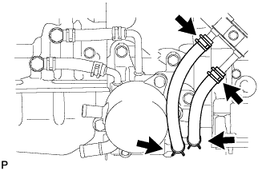
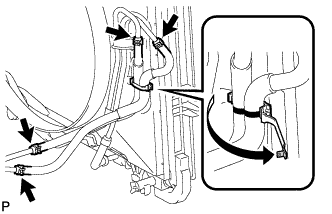

МАСЛЯНЫЙ РАДИАТОР (для моделей с 1GR-FE) > СНЯТИЕ |
| 1. СНИМИТЕ ЗАДНЮЮ НИЖНЮЮ КРЫШКУ ДВИГАТЕЛЯ В СБОРЕ |
Выверните 4 болта и снимите заднюю защиту картера двигателя.
| 2. СНИМИТЕ ЗАЩИТУ КАРТЕРА ДВИГАТЕЛЯ № 1 В СБОРЕ |
Выверните 4 болта.
 |
Отсоедините защиту картера двигателя от кузова автомобиля, как показано на рисунке.
| 3. СНИМИТЕ УПЛОТНЕНИЕ ФАРТУКА ПРАВОГО ПЕРЕДНЕГО КРЫЛА |
Освободите 5 фиксаторов и снимите уплотнение фартука переднего крыла.
| 4. СНИМИТЕ УПЛОТНЕНИЕ № 1 МЕЖДУ ФАРТУКОМ ПРАВОГО ПЕРЕДНЕГО КРЫЛА И РАМОЙ |
Освободите 5 фиксаторов и снимите уплотнение между фартуком переднего крыла и рамой № 1.
| 5. СНИМИТЕ НАКЛАДКУ ПЕРЕДНЕГО БАМПЕРА (для моделей с масляным радиатором трансмиссии с воздушным охлаждением) |
Снимите облицовку переднего бампера (Нажмите здесь).
| 6. СЛЕЙТЕ ОХЛАЖДАЮЩУЮ ЖИДКОСТЬ ДВИГАТЕЛЯ (для моделей без масляного радиатора трансмиссии с воздушным охлаждением) |

| *1 | Пробка расширительного бачка | *2 | Пробка радиатора |
| *3 | Пробка сливного крана радиатора | *4 | Пробка сливного крана блока цилиндров |
Ослабьте пробку сливного крана радиатора.
Снимите пробку радиатора и слейте охлаждающую жидкость.
Ослабьте 2 пробки сливных кранов блока цилиндров и слейте охлаждающую жидкость из двигателя.
| 7. СНИМИТЕ ВПУСКНОЙ ПАТРУБОК МАСЛЯНОГО РАДИАТОРА № 2 И ВЫПУСКНОЙ ПАТРУБОК МАСЛЯНОГО РАДИАТОРА № 2 (для моделей без масляного радиатора трансмиссии с воздушным охлаждением) |
|  |
Отсоедините впускной патрубок № 2 и выпускной патрубок № 2 масляного радиатора от впускного патрубка № 1 и выпускного патрубка № 1 масляного радиатора.
Отсоедините 2 патрубка от термостата трансмиссионного масла и снимите их.
| 8. СНИМИТЕ МАСЛЯНЫЙ РАДИАТОР ТРАНСМИССИИ В СБОРЕ (для моделей без масляного радиатора трансмиссии с воздушным охлаждением) |
Отсоедините 2 перепускных шланга охлаждающей жидкости от масляного радиатора трансмиссии.
Отсоедините впускной патрубок масляного радиатора № 1 и выпускной патрубок масляного радиатора № 1 от штуцеров патрубков масляного радиатора.
Выверните 3 болта и снимите масляный радиатор трансмиссии вместе с термостатом трансмиссионного масла.
Снимите 2 патрубка с термостата трансмиссионного масла.
Выверните 3 болта и снимите масляный радиатор трансмиссии с термостата трансмиссионного масла.
Извлеките 2 кольцевых уплотнения из канавок масляного радиатора трансмиссии.
| 9. СНИМИТЕ ВПУСКНОЙ ПАТРУБОК МАСЛЯНОГО РАДИАТОРА № 3 И ВЫПУСКНОЙ ПАТРУБОК МАСЛЯНОГО РАДИАТОРА № 3 |
|  |
Отсоедините захват, чтобы разомкнуть зажим гибкого шланга № 1.
Отсоедините впускной патрубок № 3 и выпускной патрубок № 3 масляного радиатора от трубки масляного радиатора № 2.
Отсоедините 2 патрубка от впускного патрубка масляного радиатора и выпускного патрубка масляного радиатора № 1 и снимите их.
| 10. СНИМИТЕ ВПУСКНОЙ ПАТРУБОК МАСЛЯНОГО РАДИАТОРА № 1 И ВЫПУСКНОЙ ПАТРУБОК МАСЛЯНОГО РАДИАТОРА № 1 (для моделей без масляного радиатора трансмиссии с воздушным охлаждением) |
Выверните 2 болта, чтобы разомкнуть 2 зажима гибких шлангов № 2, и снимите 2 патрубка масляного радиатора.
Выверните 2 болта и снимите 2 зажима гибких шлангов № 2.
| 11. СНИМИТЕ ВПУСКНОЙ ПАТРУБОК МАСЛЯНОГО РАДИАТОРА № 1 И ВЫПУСКНОЙ ПАТРУБОК МАСЛЯНОГО РАДИАТОРА № 1 (для моделей с масляным радиатором трансмиссии с воздушным охлаждением) |
 |
С помощью разрезной головки отсоедините впускной патрубок масляного радиатора № 1 и выпускной патрубок масляного радиатора № 1 от штуцеров патрубков масляного радиатора.
Выверните 2 болта, чтобы разомкнуть 2 зажима гибких шлангов № 2, и снимите 2 патрубка масляного радиатора.
Выверните 2 болта и снимите 2 зажима гибких шлангов № 2.
| 12. СНИМИТЕ ВПУСКНОЙ ПАТРУБОК МАСЛЯНОГО РАДИАТОРА № 4 И ВЫПУСКНОЙ ПАТРУБОК МАСЛЯНОГО РАДИАТОРА № 4 |
Отсоедините впускной патрубок масляного радиатора № 4 и выпускной патрубок масляного радиатора № 4 от радиатора.
Отсоедините 2 патрубка от трубки масляного радиатора № 2 и снимите их.
| *A | Для моделей без масляного радиатора трансмиссии с воздушным охлаждением |
| *B | Для моделей с масляным радиатором трансмиссии с воздушным охлаждением |
| 13. СНИМИТЕ ВПУСКНОЙ ПАТРУБОК МАСЛЯНОГО РАДИАТОРА № 5 И ВЫПУСКНОЙ ПАТРУБОК МАСЛЯНОГО РАДИАТОРА № 5 (для моделей с масляным радиатором трансмиссии с воздушным охлаждением) |
Отсоедините впускной патрубок № 5 и выпускной патрубок № 5 масляного радиатора от трубки масляного радиатора № 2.
Отсоедините 2 патрубка от трубки масляного радиатора № 3 и снимите их.
| 14. СНИМИТЕ ТРУБКУ МАСЛЯНОГО РАДИАТОРА № 2 В СБОРЕ |
Выверните 2 болта и снимите трубку масляного радиатора № 2.
| *A | Для моделей без масляного радиатора трансмиссии с воздушным охлаждением |
| *B | Для моделей с масляным радиатором трансмиссии с воздушным охлаждением |
| 15. СНИМИТЕ ВПУСКНОЙ ПАТРУБОК МАСЛЯНОГО РАДИАТОРА № 6 И ВЫПУСКНОЙ ПАТРУБОК МАСЛЯНОГО РАДИАТОРА № 6 (для моделей с масляным радиатором трансмиссии с воздушным охлаждением) |
Отсоедините впускной патрубок № 6 и выпускной патрубок № 6 масляного радиатора от трубки масляного радиатора № 3.
Отсоедините 2 патрубка от масляного радиатора и снимите их.
| 16. СНИМИТЕ ТРУБКУ МАСЛЯНОГО РАДИАТОРА № 3 В СБОРЕ (для моделей с масляным радиатором трансмиссии с воздушным охлаждением) |
 |
Выверните болт и снимите трубку масляного радиатора № 3.
| 17. СНИМИТЕ МАСЛЯНЫЙ РАДИАТОР В СБОРЕ (для моделей с масляным радиатором трансмиссии с воздушным охлаждением) |
 |
Выверните 3 болта и снимите масляный радиатор.
 |
Выверните 2 болта и снимите кронштейны масляного радиатора.